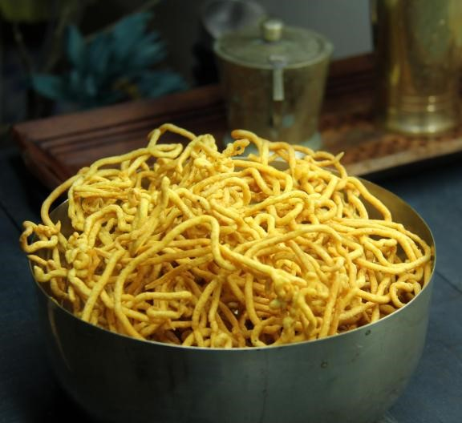

üçú Sev Recipe

Ingredients
- 2 cups gram flour (besan)
- 1/4 tsp turmeric powder
- 1/4 tsp red chili powder
- 1/2 tsp carom seeds (ajwain)
- 2 tbsp oil (hot, for moyan)
- Salt to taste
- Water as required to make dough
- Oil for deep frying
Instructions
- In a bowl, mix besan, turmeric, chili powder, carom seeds, and salt.
- Add hot oil (moyan) and mix with your fingers.
- Gradually add water to make a smooth and soft dough.
- Fill the dough into a sev maker fitted with a fine-holed disc.
- Heat oil and directly press sev into the oil in circular motion.
- Fry on medium heat until crisp and golden. Remove and drain on paper.
Serve With
- Tea or coffee
- As topping on chaat or poha
- Mixed with murmura or namkeen
üí° Tip: Ensure the oil is not too hot, or the sev may burn quickly.